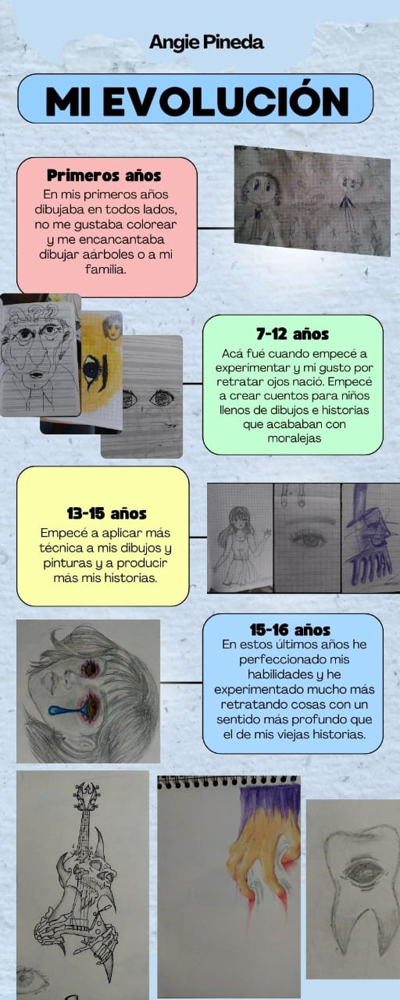

Inicié muy pequeña a dibujar, pintar, y jugar con plastilina desde pequeña, son cosas que disfruté siempre mucho y con el tiempo
terminaron influyendo estas pequeñas cosas en mi yo actual, en el colegio siempre dibujaba en todo lugar y los trabajos artisticos se me dieron siempre muy bien
mi familia siempre me apoyó desde pequeña, yo era la pintora de la familia, estas cosas me inspiraron mucho a querer desarrollar mejor mis habilidades.

Conocí diferentes técnicas a medida que fuí creciendo y desde siempre supe que de grande yo quería ser artista, y poco a poco fuí aprendiendo de manera
autónoma, solo en una ocasión durante unos mese tuve un mestro de artes, diferente al que proporciona el colegio.Cuando cursaba 9 grado reconsideré cambiar de
proyecto de vida ya que a pesar de que siempre he sabido que es un ámbito laboral complicado de forma económica, le dí más importancia por esos años,pero
finalmente el dinero no compra la felicidad.